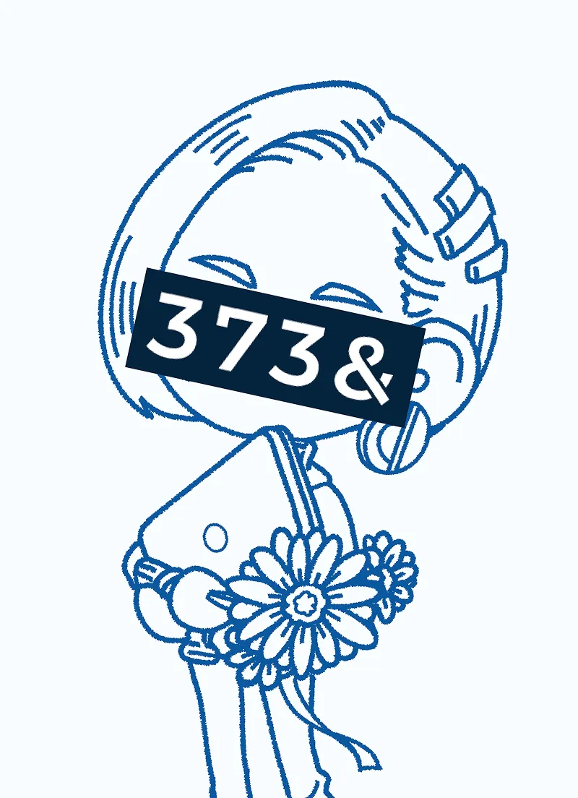

みなみやってこんな人
- 青森県出身・在住
- 青森・東北が大好き
- 一児の子育て中ママ
- 血液型：A型
- 座右の銘：「自分が源」
- モットー：誠実、丁寧、納期厳守
- 経歴：携帯電話業界12年、学生時代は吹奏楽部で打楽器担当
- 好きな色：青とオレンジ
前職では、携帯電話業界で12年間、幅広い年代のお客様お一人おひとりと真剣に向き合ってきました。
「何に困っているのか」「本当に求めているものは何か」を汲み取り、専門的な内容も、お客様にとって分かりやすい言葉でお伝えしてきました。
相手の言葉に耳を傾けることが、よい提案の出発点だと実感しています。
この姿勢は、デザインの仕事でも変わらず、丁寧なヒアリングと対話を大切に、1件1件、心を込めてお作りしています。
わたしの好きないろいろ
- 好きな花：たんぽぽ、梅の花（写真で持っているのはガーベラ笑）
- 好きな食べ物：チョコレート、ポン菓子、干し餅
- 好きな飲み物：牛乳・甘酒、お酒NG
- 好きな楽器：ビブラフォン
- 好きな音楽：ゲームサントラ
- 好きなキャラクター：耳の先が丸いミッフィー
- 好きなポケモン：ワタッコ、カイオーガ
- 好きな怪獣：モスラ
- 好きな声優：千葉茂さん、大塚明夫さん
- 好きな漫画：宝石の国、ドロヘドロ
- 好きなゲーム：ポケモン、クロノ・トリガー、ロックマンゼロ
- 好きな方言：「ほにほに」（意味は本当に。なるほど。）

屋号への想い
「373&DESIGN」（ミナミアンドデザイン）は、私の名前「みなみや」を「3738」と数字に置き換え「8」を「&」に見立てています。
「8」は横にすると∞、無限大にも見える形。ここにはご縁を末長く大切にしたい想い、「&」には、デザインはクライアント様と想いを共有し、対話を重ねながら、ともに創り上げていきたい想いを込めています。
私は港町で生まれ育ち、幼い頃から海を身近に、波の音を聞きながら過ごしてきました。
名前に含まれる「なみ」から連想した「波」――寄せては返す波のように、お客様の想いをすくい上げ、その背景を紐解き、
ひとつの物語として形にしていきます。